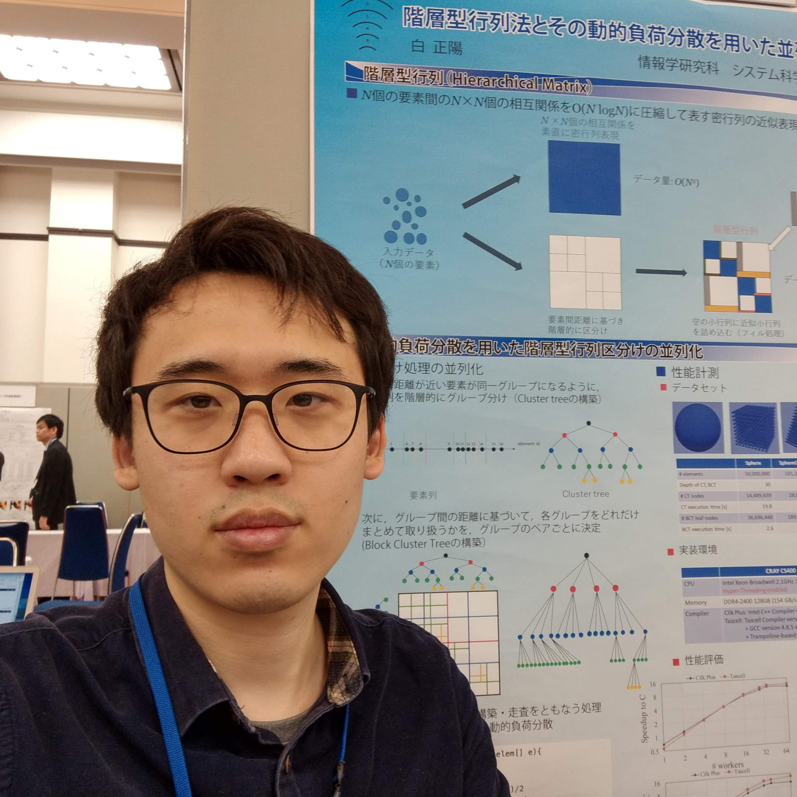
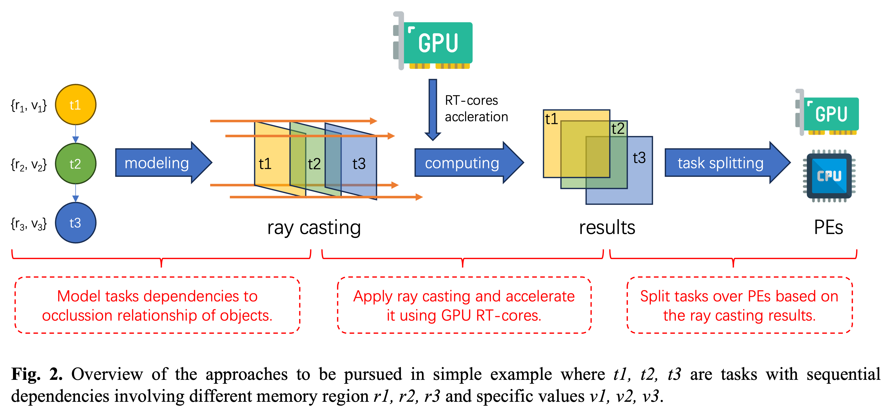
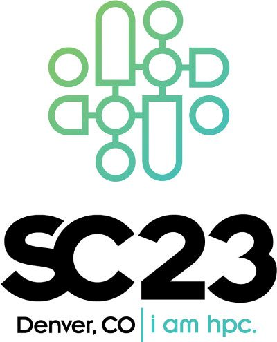
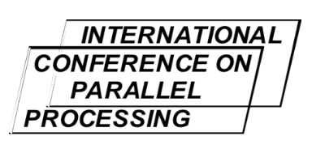

Postdoctoral Researcher at RIKEN
Dr. Zhengyang Bai
High Performance Artificial Intelligence Systems Research Team
RIKEN Center for Computational Science
RIKEN Center for Computational Science
My research interests are High Performance Computing, Artificial Intelligence and Task Parallel Languages.
My current research topic focuses on Dynamic Dependence Analysis, Cross Node Work-stealing Strategy in parallel language Tascell and its application in Hierarchical Matrix Construction.
Welcome!
Please contact me if you have any question about my research.
My Recent Events
-
Poster Presentation
7 Aug, 2024
With the help of my team leader Dr. Wahib, my poster presentation "Leveraging Ray-casting for Task Splitting over Processing Elements" has been presented in Cross-disciplinary Workshop on Computing Systems, Infrastructures, and Programming (xSIG2024).
-
Paper Published
16 May, 2024
Under the supervision of Prof. Ma, paper that I participate as co-author with title "User-Experience Oriented POI Recommendation with Pseudo Rating" has been published by international journal Multimedia Tools and Applications.
-
Paper Published
8 May, 2024
Under the supervision of Prof. Ma, papers that I participate as co-author with title "U-KyotoTrip: A Travel Planning System for User Experience Oriented Trips" and "An Empirical User Study on Congestion-aware Route Recommendation" has been published in Information and Communication Technologies in Tourism 2024.
-
Poster Presentation
16 Apr, 2024
With the help of my team leader Dr. Wahib and all team mates, I gave a poster presentation with title of "Critical Path Detecting by Ray-casting with Ray-tracing Cores Acceleration" in Joint Laboratory for Extreme-Scale Computing (JLESC16), Kobe, Japan.
-
Paper Published
25 Mar, 2024
Under the supervision of Prof. Ma, paper that I participate as the 2nd author with title "Tourist Attractions Prediction with Enhanced Location Knowledge Graph" has been published in 2023 IEEE International Conference on High Performance Computing & Communications, Data Science & Systems, Smart City & Dependability in Sensor, Cloud & Big Data Systems & Application (HPCC/DSS/SmartCity/DependSys).
-
Grant Approved
1 Mar, 2024
With the help of TL Wahib and all team members in HPAIS, my application for the Grant-in-Aid for Early-Career Scientists with topic "Leveraging Ray Casting for Task Splitting over Processing Elements" has been approved by Japan Society for the Promotion of Science (JSPS), this project will begin from Apr 2024 until Mar 2026.
-
Poster Presentation
29 Jan, 2024
Under the supervision of Prof. Peng Chen, poster that I participate as the 4th author with title "Efficient Edge-Cloud Computing and Communication Platform" has been presentated in The 6th R-CCS International Symposium.
-
Commitee Experience
10 Nov, 2023
I am appointed to be the Poster Chair at The 6th R-CCS Internation Symposium. We are call for posters now, and the submission due is Dec 31, 2023.
-
Presentation
14 Jul, 2023
I just gave a talk about my current research Leveraging Ray Casting for Task Splitting over Processing Elements at the The 247th R-CCS Cafe, Kobe.
-
Employment
1 May, 2023
I become a Postdoctoral Researcher at High Performance Artificial Intelligence Systems Research Team (HPAIS), RIKEN Center for Computational Science (R-CCS).
-
Degree Conferred
23 Mar, 2023
Under the supervision of Prof. Fukazawa, I successfully pass the dissertation review and received the Doctor of Informatics degree from Graduate School of Informatics, Kyoto University.
-
Paper Published
17 Mar, 2023
Under the supervision of Prof. Hiraishi, Prof. Ida, Prof. Yasugi and Prof. Fukazawa, my paper "Construction of Hierarchical Matrix on Distributed Memory Systems using a Task Parallel Language" is offically published at 2022 The Tenth International Symposium on Computing and Networking Workshops (CANDARW).
-
Dissertation
6 Feb, 2023
My Ph.D. dissertation "Research on Parallel Hierarchical Matrix Construction" is scheduled for 13:30~15:30 in 15 Feb, 2023, at the Room 404, North Building of the Academic Center for Computing and Media Studies, Kyoto University Yoshida Campus.
-
Dissertation
23 Dec, 2022
Under the supervision of Prof. Fukazawa, I just passed the preliminary review of my Ph.D. dissertation.
-
Conference Presentation
21 Nov, 2022
Under the supervision of Prof. Hiraishi, Prof. Ida, Prof. Yasugi and Prof. Fukazawa, I just did an presentation "Construction of Hierarchical Matrix on Distributed Memory Systems using a Task Parallel Language" at 10th International Workshop on Computer Systems and Architectures (CSA'22), one of the workshops in conjunction with 2022 Tenth International Symposium on Computing and Networking (CANDAR).
-
Paper Published
19 Oct, 2022
Under the supervision of Prof. Hiraishi, Prof. Ida and Prof. Yasugi, my paper "Parallelization of Matrix Partitioning in Hierarchical Matrix Construction on Distributed Memory Systems" is offically published at Journal of Information Processing.
-
Conference Presentation
17 Mar, 2022
Under the supervision of Prof. Hiraishi, Prof. Ida, Prof. Yasugi, I did a presentation at the 138th Research Meeting of SIGPRO (PRO-2021-5), with title of "Parallelization of Matrix Partitioning in Hierarchical Matrix Construction Using Node-aware Work Stealing".
Work Experience
Postdoctoral Researcher, RIKEN
Contract, May 2023 -- Present, Tokyo.
Department: RIKEN Center for Computational Science
Team: High Performance Artificial Intelligence Systems Research Team
Outsourcing Partner, Yahoo! Japan
Part-time, Apr 2022 -- Mar 2023, Osaka.
Research Assistant, Kyoto University
Part-time, Nov 2019 -- Mar 2023, Kyoto.
Kyoto University Graduate Division Fellow
Part-time, Dec 2021 -- Mar 2022, Kyoto.
Teaching Assistant
Part-time, Apr 2018 -- Jul 2020, Kyoto.
System Engineer, Fujitsu Marketing Ltd.
Contract, Oct 2015 -- Mar 2016, Tokyo.
Android Engineer (intern), Teambition
Internship, Dec 2014 -- Feb 2015, Shanghai.
Education
Doctor of Informatics, Kyoto University
Apr 2019 -- Mar 2023, Kyoto.
Department: Department of System Science, Graduate School of Informatics
Laboratory: Supercomputing Laboratory (Nakashima & Fukazawa Lab.)
Thesis: Research on Parallel Hierarchical Matrix Construction
Master of Informatics, Kyoto University
Apr 2017 -- Mar 2019, Kyoto.
Department: Department of System Science, Graduate School of Informatics
Laboratory: Supercomputing Laboratory (Nakashima & Fukazawa Lab.)
Thesis: Implementation of Partitioning of Hierarchical Matrices using Task Parallel Languages
Bachelor of Engineering, East China Normal University
Sep 2011 -- Jun 2015, Shanghai.
Department: Software Engineering Institute
Supervisor: Prof. Liangyu Chen
Thesis: Reverse Analysis for Java Class by ASM (in Chinese)
Research
· Leveraging Ray Casting for Task Splitting over Processing Elements
Task splitting based on task dependency analysis is a critical aspect of task-based runtime systems, as it significantly impacts performance. An effective task splitting algorithm should allocate tasks to processing elements (PEs) with improved data locality and minimizing the overhead caused by data communication. Traditionally, this analysis is performed using a Task Dependency Graph, which is a sparse matrix with complex algorithms, making it difficult to accelerate. However, we propose a novel approach to enhance performance by modeling the task dependency analysis problem as a visibility problem and employing ray casting to extract the dependencies and split the tasks.
In this research, we delve into the concept of using ray casting for task dependency analysis and splitting, explaining why it offers a promising alternative to conventional methods and the potential advantages over existing techniques.

· H-matrix Construction by Task Parallel Languages
This research is a parallelized implementation of hierarchical matrices construction using task parallel languages like Cilk Plus and Tascell based on a Fortran implementation in HACApK library coded by Prof. Akihiro Ida.
The construction of the hierarchical matrix is achieved by dividing a matrix into submatrices (partitioning), followed by calculating these submatrices' entries (filling). The matrix partitioning is divided into two sub-steps: cluster tree (CT) construction by dividing objects into clusters, hierarchically, and block cluster tree (BCT) construction by observing all cluster pairs at the same level of the cluster tree that satisfy a given admissibility condition. Therefore, both CT and BCT construction are unpredictably imbalance, it is difficult to parallelize it using traditional Techniques. Here, together with my supervisor and advisors, I proposed a new parallel implementation on H-matrix construction using task parallel languages.
· Node-aware Work-stealing in Tascell
This research is initially built to solve a problem in CT construction in the research above, which allows users to add notations to tell Tascell compiler how to deal with task request bese on the information of where the task request comes from. We call this feature node-guard and packaged it into Tascell with an easy syntax to use.
This research can be apply to all application with a similiar problem like CT construction. In detail, when there are more than 1 kind of parallel blocks in the same part of program and some of them is appropriate for cross-node work-steal but the others are not, programmer can use this feature to maximize the performance by control which can do cross node Work-stealing and whic cannot. We also found that this research gives programmer using Tascell a posibility to improve performance by adding probability into node-guard control. However, this statement still needs more experiments to prove.
To learn more about this research please visit my Tascell repository forked from origin Tascell. (Will merge into origin Tascell in the future.)
Publications
Papers
-
User-experience Oriented POI Recommendation with Pseudo Rating, K Yi, R Yamagishi, J Li, T Li, Z Bai, Q Ma, Multimedia Tools and Applications (2024), Jun 2024. link
-
U-KyotoTrip: A Travel Planning System for User Experience Oriented Trips, K Yi, T Maekawa, Y Kong, Z Bai, X Jin, Q Ma, Information and Communication Technologies in Tourism 2024, pp. 339--352, Izumir, Turkey, Jan 2024. link
-
An Empirical User Study on Congestion-aware Route Recommendation, K Yi, X Jin, Z Bai, Y Kong, Q Ma, Information and Communication Technologies in Tourism 2024, pp. 325--338, Izumir, Turkey, Jan 2024. link
-
Tourist Attractions Prediction with Enhanced Location Knowledge Graph, J Xu, Z Bai, Q Ma, 2023 IEEE International Conference on High Performance Computing & Communications, Data Science & Systems, Smart City & Dependability in Sensor, Cloud & Big Data Systems & Application (HPCC/DSS/SmartCity/DependSys), pp. 972--979, Melbourne, Australia, Dec 2023. link
-
Construction of Hierarchical Matrix on Distributed Memory Systems using a Task Parallel Language, Z Bai, T Hiraishi, A Ida, M Yasugi, K Fukazawa, 2022 The Tenth International Symposium on Computing and Networking Workshops (CANDARW), pp. 48--54, Himeji, Japan, Nov 2022. link
-
Parallelization of Matrix Partitioning in Hierarchical Matrix Construction on Distributed Memory Systems, Z Bai, T Hiraishi, A Ida, M Yasugi, Journal of Information Processing, Vol. 30, pp. 742--754, Oct 2022. link
-
Parallelization of Matrix Partitioning in Construction of Hierarchical Matrices using Task Parallel Languages, Z Bai, T Hiraishi, H Nakashima, A Ida, M Yasugi, Journal of Information Processing, Vol. 27, pp. 840--851, Nov 2019. link
Misc.
-
Research on Parallel Hierarchical Matrix Construction, Z Bai, Ph.D. Dissertation, Kyoto University, Mar 2023. link
-
Recommending POIs for Tourists by User Behavior Modeling and Pseudo-Rating, K Yi, R Yamagishi, T Li, Z Bai, Q Ma, arXiv preprint arXiv:2110.06523, Nov 2021. link
-
Implementation of Partitioning of Hierarchical Matrices using Task Parallel Languages, Z Bai, T Hiraishi, H Nakashima, A Ida, M Yasugi, The 48th International Conference on Parallel Processing (ICPP2019), Poster, Kyoto, Japan, Aug 2019. (Best Poster Award winner) link
Presentations
-
Leveraging Ray-casting for Task Splitting over Processing Elements, Z Bai, M Wahib, E Vatai, C Zhuang, P Chen, Cross-disciplinary Workshop on Computing Systems, Infrastructures, and Programming (xSIG2024), Poster, Tokushima, Japan, Aug 2024. link
-
Critical Path Detecting by Ray-casting with Ray-tracing Cores Acceleration, Z Bai, M Wahib, C Zhuang, P Chen, Joint Laboratory for Extreme-Scale Computing (JLESC16), Poster, Kobe, Japan, Apr 2024. link
-
Efficient Edge-Cloud Computing and Communication Platform, P Chen, Y Tan, D Wu, Z Bai, M Wahib, Y Tanimura, The 6th R-CCS International Symposium, Poster, Kobe, Japan, Jan 2024. link
-
Leveraging Ray Casting for Task Splitting over Processing Elements, Z Bai, The 247th R-CCS Cafe, Kobe, Japan, Jul 2023. link
-
Parallelization of Matrix Partitioning in Hierarchical Matrix Construction Using Node-aware Work Stealing, Z Bai, T Hiraishi, A Ida, M Yasugi, the 138th Research Meeting of SIGPRO (PRO-2021-5), Information Processing Society of Japan, Tsukuba, Japan, Mar 2022. link
-
Task Parallel Language Tascell and its Application to Hierarchical Matrices (in Japanese), Z Bai, The 14th ICT Innovation, Poster, Kyoto, Japan, Feb 2020. link
-
Parallelization of Matrix Partitioning in Construction of Hierarchical Matrices using Task Parallel Languages, Z Bai, T Hiraishi, H Nakashima, A Ida, M Yasugi, The 3rd cross-disciplinary Workshop on Computing Systems, Infrastructures, and Programming (xSIG2019), Presentation & Poster, Yokohama, Japan, May 2019. (Outstanding Research Award winner) link
-
Hierarchical Matrices and its Parallelization by Dynamic Load Balancing (in Japanese), Z Bai, The 13th ICT Innovation, Presentation & Poster, Kyoto, Japan, Feb 2019. link
-
Parallelization of Matrix Partitioning in Construction of Hierarchical Matrices using Task Parallel Languages, Z Bai, T Hiraishi, H Nakashima, A Ida, M Yasugi, the 122th Research Meeting of SIGPRO (PRO-2018-4), Information Processing Society of Japan, Fukuyama, Japan, Feb 2019. link
-
Parallelization of Matrix Partitioning in Construction of Hierarchical Matrices by Cilk Plus (in Japanese), Z Bai, T Hiraishi, A Ida, H Nakashima, M Yasugi, The 20th Programming and Programming Language Workshop (PPL2018), Poster, Yonago, Japan, Mar 2018. link
Honors & Awards
Awards
-
Best Poster Award
The 48th International Conference on Parallel Processing (ICPP2019), Aug 2019. -
Outstanding Research Award
The 3rd cross-disciplinary Workshop on Computing Systems, Infrastructures, and Programming (xSIG2019), May 2019. -
Second Prize
Software Cup of East China Normal University, Oct 2014. -
Honorable Mention
Mathematical Contest in Modeling (MCM), Sep 2014.
Research Funds
-
Grants-in-Aid for Scientific Research (KAKENHI): Grant-in-Aid for Early-Career Scientists (WAKATE)
Japan Society for the Promotion of Science, Apr 2024 -- Mar 2026.
Topic: Leveraging Ray Casting for Task Splitting over Processing Elements -
SPRING: Support for Pioneering Research Initiated by the Next Generation
Japan Science and Technology Agency, Dec 2021 -- Mar 2022.
Topic: Data Locality-Aware Dynamic Load Balancing and Its Application to Large-Scale Parallelization of Hierarchical Matrix Computations (in Japanese) -
Daxia Undergraduate Research Fund
East China Normal University, Dec 2013 -- Nov 2014.
Topic: Android Software for Chinese Foreign Exchange Market and Feasibility Analysis of Its Arbitrage Opportunities (in Chinese)
Scholarships
-
Kawaguchi Shizu Memorial Scholarship
The Asian Foundation for International Scholarship Interchange, Apr 2018 -- Mar 2019. -
East China Normal University Software Engineering Institute IFTC Scholarship
Software Engineering Institute, East China Normal University, Apr 2015. -
East China Normal University Software Engineering Institute IFTC Scholarship
Software Engineering Institute, East China Normal University, Apr 2014. -
Scholarship for Outstanding Student of Ethnic Minorities
East China Normal University, Nov 2012.
Certifications
-
Information Storage and Management
EMC Academic Associate, Dec 2013.
Conference Committee Experience
Poster Chair, The 6th R-CCS International Symposium Organization Committee
Kobe, Jun 2023 -- Jan 2024.
Committee Memberships
IEEE Computer Society Membership, Institute of Electrical and Electronics Engineers
Aug 2024 -- Present
Professional Membership, Association for Computing Machinery
Aug 2024 -- Present
Other Activities
Coach, 2024 APAC HPC-AI Competition
Online, Jun 2024 -- Nov 2024.

Exhibitor, SC23: The International Conference for High Performance Computing, Networking, Storage, and Analysis
Denver, Nov 2023.
Operational Assistance Staff, RIKEN Open Day in Kobe
Kobe, Nov 2023.
Sub-reviewer, International Conference on Database and Expert Systems Applications (DEXA2023)
Penang, May 2023.
Exhibitor, SC19: The International Conference for High Performance Computing, Networking, Storage, and Analysis
Denver, Nov 2019.

Student Staff, The 48th International Conference on Parallel Processing (ICPP2019)
Kyoto, Aug 2019.
Participant, International HPC Summer School (IHPCSS) 2019
Kobe, Jul 2019.
Participant, the 3rd RIKEN R-CCS HPC Youth Workshop
Kobe, Feb 2019.
Student Staff, The 20th Programming and Programming Language Workshop (PPL2018)
Yonago, Mar 2018.
Links
About Parallel H-matrix Construction
About Task Parallel Language Tascell
About RIKEN
- RIKEN
- RIKEN Center for Computational Science
- High Performance Artificial Intelligence Systems Research Team
About Kyoto University
- Kyoto University
- Graduate School of Informatics
- Department of System Science
- Supercomputing Research Lab
About East China Normal University
Details
Address: Nihobashi 1-chome Mitsui Building, 15th floor, 1-4-1 Nihonbashi, Chuo-ku, Tokyo 103-0027, Japan.
Email: zhengyang.bai@riken.jp
Tel: +81-50-3495-0238